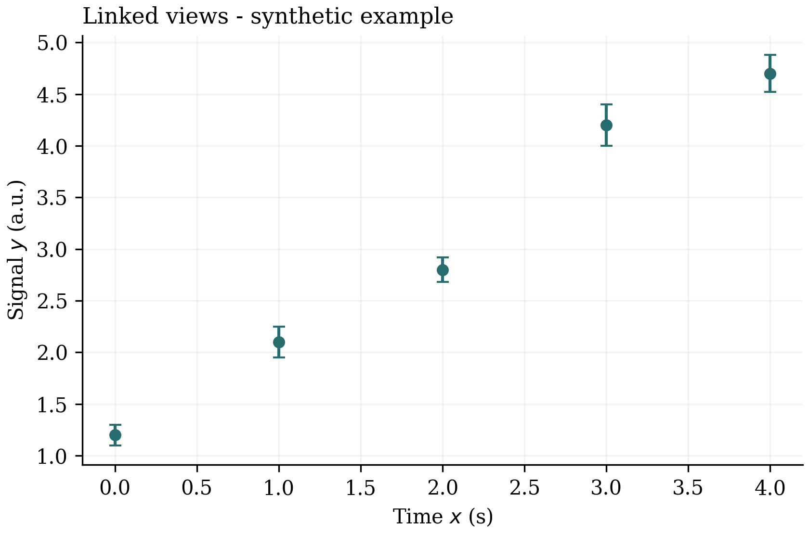
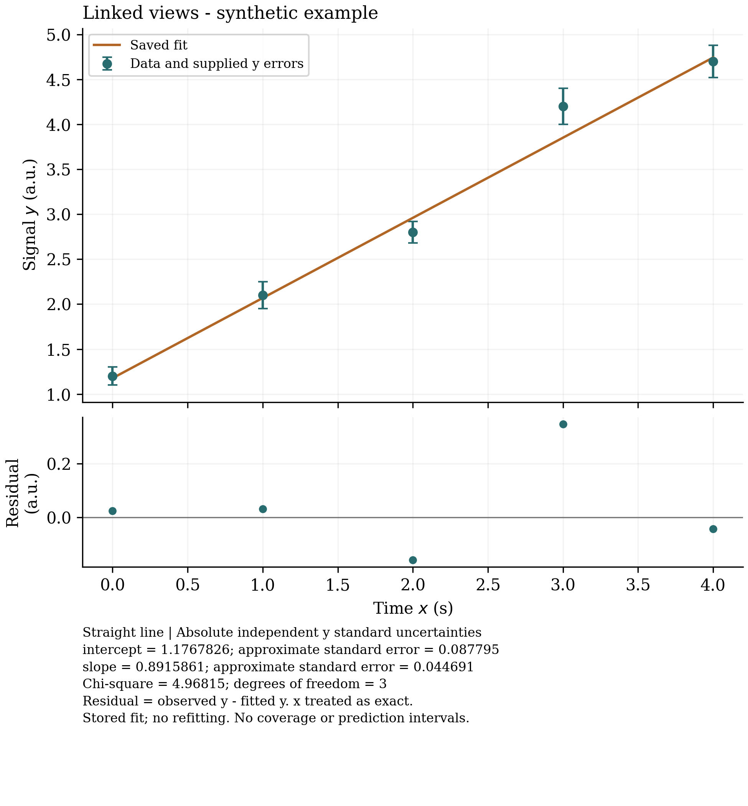

Publication figures
An optional Matplotlib adapter turns a saved data state into figures with a traceable source.
Template 0.5 offers publication-matplotlib alongside its required linked-data package. The neutral workbench omits both; a linked-data app can also omit publication. The adapter reuses the earlier Matplotlib experiment and adds editor integration, cancellation and a portable export bundle.
Choose the output
| Offer | Output | External dependency |
|---|---|---|
| Mathtext | PDF, SVG and 300 dpi PNG together | Python with Matplotlib 3.10.9 |
| LaTeX | PDF with LaTeX typography | The same Python environment and a working LaTeX toolchain |
The first renderer is a scatter plot with supplied vertical error bars and literal axis labels. It does not compute uncertainties, fit a model, reproduce every interactive style, or send jobs to a physical printer. Selecting the optional fitting adapter as well enables the saved-fit output below. PGF remains a separate experiment. Arbitrary TeX commands and preambles are not accepted.

PDF · SVG · LaTeX PDF · Bundle manifest · Saved source project

Saved fits and residual diagnostics
Select all three packages with apps/fitted-publication-workbench.json. Configure fitted-publication-workbench.fittingPython and fitted-publication-workbench.publicationPython in User Settings, using the environments described in the fitting and publication guides. They may be separate environments; publication does not run the numerical solver again.
Fit the data and wait for completion, leaving the chosen model enabled. Export Figure Bundle saves the project and offers a format, then Data and supplied error bars or Saved fit and residual diagnostics. The latter draws the stored curve and raw residuals (observed y minus fitted y), followed by parameter estimates, approximate standard errors and the fit objective. A missing or mismatched result, or a newer unfinished/failed matching attempt, produces an error. There is no fallback to a different result. Restoring a previous data node can reuse its matching saved fit.

Fitted PDF · SVG · Full fit report · Manifest · Saved project

A second example exports the NIST Misra1a saturating-exponential fit with LaTeX: PDF · fit report · manifest. Its supplied error bars are zero and its fit is unweighted; parameter covariance is scaled by RSS / (n − 2). See the reference-data provenance.
fit-report.json retains the full covariance, residuals, curve, solver versions, specification and source/result hashes. These are approximate least-squares parameter errors, not coverage or prediction intervals. GUM and Monte Carlo propagation remain separate work. The combination qualification records host, omission, failure and rendered-output checks.
Generate and configure
python3 tools/compose_app.py generate apps/publication-workbench.json --output artifacts/instances/publication-workbench
The canonical example has been generated locally; use a new directory when generating another instance. Inside the generated app, prepare an isolated Python environment:
python3 -m venv .state/publication-python .state/publication-python/bin/python -m pip install -r extension/publication-matplotlib/requirements.txt
In the app's User Settings, set publication-workbench.publicationPython to that interpreter's absolute path. The setting is machine-scoped. No dependency installation happens when the editor starts. Python runs in isolated mode, with a private Matplotlib cache, and publication requires workspace trust.
Export from the editor
- Open Publication Workbench: Open Linked Data Example from the command palette, or open your linked-data file.
- Edit the data and wait for any calculation you want to retain.
- Choose Publication Workbench: Export Figure Bundle, then select the output offer and a new bundle folder.
- The command saves the project and captures that exact state. Later edits cannot change the figure being rendered. Use Cancel in the progress notification to stop the job.
- Save the project again to retain its export-completion or error journal entry.
A missing interpreter, Matplotlib installation, qualified version or LaTeX toolchain produces an error. Ordinary failure and cancellation remove the new incomplete bundle. Existing destinations are refused rather than overwritten.
A portable figure bundle
The bundle contains the exact source project, a frozen data snapshot, figures, per-figure metadata and bundle.json. It identifies the input history node, source SHA-256, row IDs, renderer/toolchain versions and hashes of all payload files. These hashes detect content changes; they are not signatures. Figure files may differ between runs because of timestamps, fonts and renderer metadata; byte-identical rendering is not promised. A session counter alone is not treated as a durable revision.
Keep the complete bundle when archiving or committing it to Git. Restoring an earlier data state does not delete an exported file. The bundle is an external result with its own recorded source. A forced crash may leave an INCOMPLETE folder; automatic recovery and general power-loss durability are not qualified.
Command-line export
node extension/publication-matplotlib/cli.mjs --source workspace/example.linked-data.json --output example.figure --python .state/publication-python/bin/python
Add --engine latex for LaTeX PDF. In a combined app, add --content fit for a matching saved result; the default --content data needs no fit. The CLI consumes a saved file and records bundle provenance; it does not modify an open editor's journal. Output directories must be new and their parent must already exist.
Evidence and boundaries
The qualification record distinguishes generated-package checks, actual renderer tests, host commands and visual inspection. Tests exercise frozen input during later edits, checksums, existing output protection, cancellation, missing dependencies and export-history reopening. The visible picker is tested separately; native save-dialog completion is not automated.
The admitted environment is local macOS x86_64, tested in installed Visual Studio Code 1.142.0 and the compiled pinned Code - OSS 1.143.0 host. LaTeX output was checked with TeX Live 2026. Packaging these dependencies, other operating systems, large datasets, physical printing, forced-crash recovery, GitHub synchronization and scientific engines remain separate work.
Upstream references: Matplotlib savefig, LaTeX rendering and workspace trust. The reuse catalogue retains the wider candidate assessment.